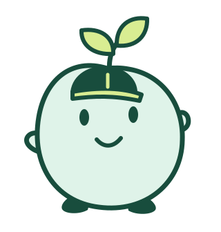
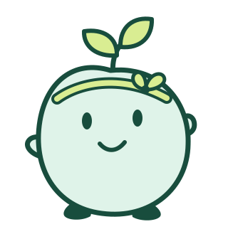
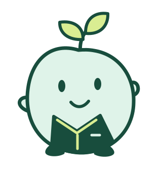
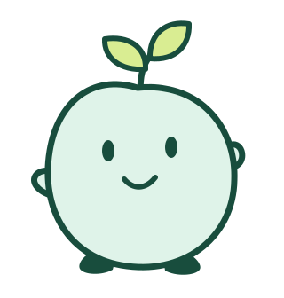
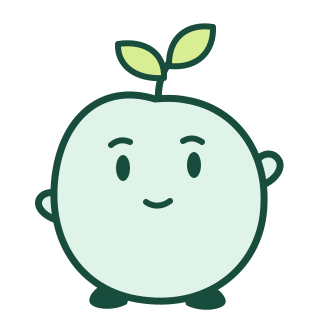
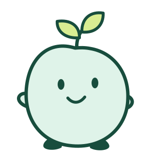
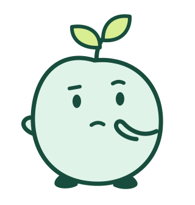
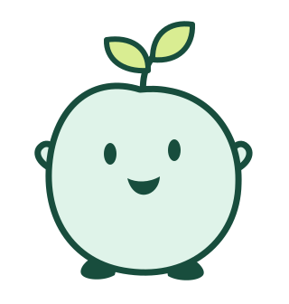
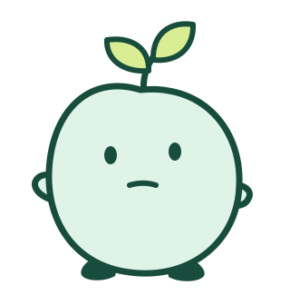

Your Guy
Forest cap, citron brim and an easygoing wave.
Editable SVG ↗A private notebook that does the maths. An expressive identity, exact numbers, and enough breathing room to see what comes next.
Our design direction: forest ink, clean white, soft mint and a little citron. Playfulness belongs in the identity; financial meaning stays precise.
Keep one letter-height of clear space. The editable SVG uses live text; supply a licensed Noi Grotesk face before final brand production.
Wordmark SVGOriginal open-ledger G. Separate adaptive foreground, background and monochrome layers are supplied.
Adaptive foreground SVGUse on receipts and small surfaces. Start at 16px wide for screens or 5mm for print; confirm engraving tolerances with the fabricator.
Monochrome SVGGreen anchors actions. Mint carries recorded money. Blue-grey and a dashed outline mean expected, never received. Red appears with financial shortfalls, overspending or invalid amount facts, never as decorative celebration.
#184D3D#FFFFFF#DFF3E9#143C30#D9ED92#243219#EEF5D9#34451D#526D79#FFFFFF#E4EFF3#243E49#AE343A#FFFFFF#FBE9E9#842329#FFFFFF#182E27#FFFFFF#182E27#F1F5F2#5E6E66#F1F5F2#718078#DDE5DF#182E27#F1F5F2#0A1B14Noi Grotesk-inspired display treatment, Fusion Neue body stack, and tabular monospace amounts. Licensed brand font files were not supplied, so this package uses declared system fallbacks.
Expected payments stay out of your balance until you confirm the money has arrived.
48px controls, explicit labels, visible focus, one primary action per decision. The examples below demonstrate component states; working product flows are in the mobile prototype.
Disabled means the action cannot complete. Do not disable a control without explaining what is missing.
Ready to review. Nothing saved.
Keep the raw sentence. Amount, currency, account, category and date remain editable before confirmation.
Pattern + words + icon distinguish uncertainty. Never rely on tint alone.
GHS 270.00 of GHS 450.00
GHS 720.00 of GHS 600.00. State the fact, then offer adjustment.
Record your first spend in a sentence. You'll check it before it's saved.
Try quick capture24 original SVG category glyphs. 24×24 canvas, 1.6px rounded strokes. Labels stay visible and category meaning survives in one colour. Review the smallest target rendering in the native implementation.
| Foundation | Decision | Purpose |
|---|---|---|
| Spacing | 4 micro / 8, 16, 24, 32, 40, 48, 64, 80 | 8pt structure with a 4pt detail step |
| Shape | 8 / 16 / 24px / capsule | Inserts / cards / sheets / controls |
| Touch | 48×48px minimum | Thumb-friendly actions and visible labels |
| Motion | 200ms enter / 140ms exit | Ease out on enter, ease in on exit; no motion under reduced-motion |
| Elevation | Flat surfaces / one sheet shadow | Hierarchy without decorative stacking |
| Amounts | Integer minor units / 2 decimal places | No estimated totals or cross-currency addition |
Named light/dark schemes, typography, spacing, shape, elevation and movement.
Download tokens.jsonGally owns its components. Material colour roles are optional interoperability data, not the visual foundation.
Custom Flutter component startersOnboarding and state specificationOptional Material role mappingOptional Material theme adapterEvery brief section, every state and a clear account of native implementation boundaries.
Screen specificationsUsage guidePersonalisation without an account. Four optional steps: name and currency, a starting priority, a first pocket, and a confirmation. Existing money data stays intact; example mode lives separately.
No sign-up. No bank login. No compulsory tour.
Open onboarding in Gally ↗“Feel ready for payday” brings income scheduling closer. “Make room for a goal” suggests a goal. Empty balances never masquerade as money available.
Every recommendation follows actual data, without removing access to the rest of Gally.
These are interactive component examples, not real permission requests or live file operations. The app exposes actual validation, import reading, file errors, storage errors and recoverable startup states when those conditions occur.
Loading: show progress for actual work. No simulated cloud connection, artificial delay or success before commit.
Error: name what happened, preserve the input, and offer a specific recovery path.
Permission: ask only at the point of use. Keep typing available after denial.
Success: state what changed. If persistence fails, say “in this session only”.
Empty: explain the gap and the next useful step; never seed a personal ledger with pretend balances.
Recovery: protect the saved copy before replacement. Avoid automatic resets.
The shared interface is custom Gally: its own buttons, category chips, ledger rows, amount displays, preview cards, sheets and navigation. Native platform surfaces handle permissions, file selection, sharing and system navigation.
| Surface | iOS | Android |
|---|---|---|
| Safe areas | Respect notch, home indicator and keyboard insets | Respect edge-to-edge status/navigation insets and keyboard |
| Back | Visible back action and native edge-back gesture for pushed screens | System/predictive back; close the current sheet before leaving the page |
| Sheets | Custom Gally content within accessible native sheet behaviour | Same Gally content with system back and keyboard dismissal |
| Permissions | Contextual microphone request; denied state links to app settings | Contextual microphone permission; handle denial and disabled permission |
| Files and share | System document picker and share sheet | System document picker and share sheet |
| Type and accessibility | Dynamic Type and VoiceOver | Font scaling and TalkBack |
These are native implementation requirements. The browser uses a neutral presentation frame and does not emulate OS dialogs.
Subscriptions feed the forecast as obligations, not as money already paid. Flexible budgets are limits over the same recorded spending; goals remain separate reservations.
Monthly · next 22 November
Active plan · not paid yetWeekly, monthly or yearly renewal. Optional trial end, reminder preference and dated future price changes. Provider cancellation always happens outside Gally.
GHS 300.00 of GHS 500.00
Includes GHS 100.00 carried forward
Base GHS 400.00 + positive unused GHS 100.00. Overspending never becomes rollover debt. Custom date ranges do not roll.
“Talk with Pip” is available during onboarding and in the app. It is labelled as a guided prototype, with predefined follow-ups and answers calculated from recorded money. No language-model service is connected.
What is safe to spend before payday?
Let's look at recorded balances, commitments before the next income, and money reserved for goals. Unreceived payments stay out of this calculation.
The app supplies exact figures from your selected currency.Ready → on-device listening → transcript → edit or send → guided reply. Proposed financial changes still go through their own confirmation.
In this browser, the preview accepts a typed transcript and records no audio. Permission denial, unavailable offline speech, cancellation and empty transcripts retain the draft.
A 900ms brand reveal, not a loading screen. The real destination is prepared underneath. Reduced motion reveals the destination directly. The product Settings includes Replay the opening animation.
| Mark | 0–360ms · gentle reveal |
| Wordmark | 160–460ms · small rise and fade |
| Tagline | 320–520ms · quiet appearance |
| Exit | 760–900ms · fade to ready destination |
| Reduced motion | No timed sequence or launch hold |
Native Android/iOS launch screens use their permitted static assets. This animation runs in the app-owned first frame, with a practical fallback if animation events do not arrive.
Desktop onboarding uses a full-height split: compact progress and real Mote artwork beside the form. The dashboard composition is preserved. Landing-page storytelling follows one example from capture to confirmation, budget and forecast.
A viewport-height workspace with a dedicated action footer and compact height tiers. The mint pane carries context, Mote artwork, progress and storage status. The duplicate draft summary is removed; final review still confirms every financial detail.
Open the web appFor a completed profile, use Settings → Revisit my setup. Existing data stays intact.
| State feedback | 180ms |
| Step, sheet and reply entry | 220ms |
| User dismissal | 140ms |
| Content/process reveal | 360ms |
| Stagger | 40ms |
Transform and opacity only. Exact amounts never count up. Reduced motion makes state changes immediate.
Gally now uses Mote’s actual FinTech pack, bundled locally. Cards, coins, wallets, receipts and cedi shapes float in reserved decorative areas. No financial information is passed to the component.
The shared adapter selects actual pack shapes and Gally colour stops. Shapes stay outside text and controls. Mote pause/play settings and system reduced motion are respected.
See Mote on the landing page ↗Pinned packages: @usemote/core and @usemote/pack-fintech, version 0.1.1. Local bundle, source entry, license and provenance are included. The HTML mobile prototype works directly; native Flutter needs a native renderer for the same SVG assets.
Integration and height-fit guidancePip is Gally’s money companion: calm, clear and on your side. Choose a character—Your Guy, Girl’s Girl, The Coach or Quiet Companion—or keep a classic speaking style. The personality changes the phrasing, never the recorded figures or confirmation rules.
Set up with Pip during onboarding, talk from Home, and change speaking style in the conversation header or Settings. This remains a guided local prototype, with no connected AI model.
Meet Pip and choose your character ↗Five original icon variants, iOS and Android phone previews, and private notification content by default. Gally stays the sender; Pip provides the voice.
Explore icons and notifications on a phone ↗Illustrative system surfaces. Native permission, delivery and launcher switching still require implementation.
The same seed silhouette, now with recognisable personality details. Choose the company you like; every look is available to everyone. The selected look carries into the app’s Pip badges, introduction, state panels and decorative scenes.

Forest cap, citron brim and an easygoing wave.
Editable SVG ↗
Citron headband, a small knot and a more expressive hello.
Editable SVG ↗
Forest vest, citron trim and a focused nod.
Editable SVG ↗A softer gaze, no outfit and one gentle wave.
Editable SVG ↗A short greeting plays once when the character comes into view, with an explicit replay button on the welcome surfaces. Pip’s hand moves; your financial figures don’t. Reduced motion and the shared pause preference leave a still, friendly pose.
Meet Pip in the mobile app ↗Larger moments: onboarding welcome, empty conversation, Home’s Pip invitation and selected empty states. Compact artwork: navigation and headers. Desktop/tablet ambient scenes use the actual Mote runtime with a project-local Pip shape pack; mobile avoids background copies.
Placement, motion and custom Mote pack guide ↗
A soft seed silhouette, a tiny sprout and an expression that makes room for you. Pip brings character to the conversation without turning your finances into a game.
One character for every speaking personality. Same face, same honest numbers, a different kind of energy.
Download editable character SVG ↗ ReadyAn open expression and a small hello.
ReadyAn open expression and a small hello.
ListeningAttentive eyes, hand lifted to listen.
ReviewA considered look before sending.
ThinkingA small upward glance and a hand to the chin.
ReplyingAn open smile and welcoming gesture.
UnavailableCalm and neutral, never alarmed.These are original, editable vectors with transparent backgrounds. Listening and thinking animations remain explicitly labelled interaction previews; the character does not imply live speech or AI.
Character and expression usage guide ↗Pip’s new characters go beyond tone: Your Guy is relaxed and candid; Girl’s Girl is expressive and supportive; The Coach focuses on manageable steps; Quiet Companion gives room to think. All are available to everyone. Classic speaking styles remain available for continuity.
The character changes language, not financial rules. Each reply retains its selected label. These examples are local and illustrative.
A recognisable mark, a small signal and readable status text. Listen, review, think, reply, pause and unavailable each have a clear meaning. The animations disappear under reduced motion; the words remain.
The guided app answers synchronously. It does not introduce a fake processing wait. Listening and thinking are explicit previews until speech and a model are connected.
Explain the benefit at the point of use, offer a choice, and leave a clear route forward. These are Gally-owned explanations and recovery states. Actual OS permission prompts retain native appearance.
Shared controls use the same sizing, outlines, focus treatment, spacing and state rules. Dropdowns and calendars are custom Gally menus with keyboard navigation; file selection and system permission dialogs remain native.
Reference controls are isolated from your ledger. New app controls retain the original value and change handlers, including dynamic forms and import mappings.
Read the character, state and controls specificationPip now has a dedicated tab in Home · Ledger · Add · Pip · Accounts. Settings remains available from the profile control and Pip’s header. The mobile conversation removes the duplicate app header, keeps character selection visible, and groups secondary actions under More.
Single-column character choices, stacked sheet actions and compact message controls respond to the handset itself, even in a wide browser. Menus and calendars stay within the phone’s visible safe area, including when the frame is scaled.
Open the refined mobile app ↗Messages scroll in their own region. Suggestions expand when needed, and keyboard overlap is reserved. At very short heights, content can scroll instead of hiding the composer or essential controls.
Read the mobile fit guidance ↗